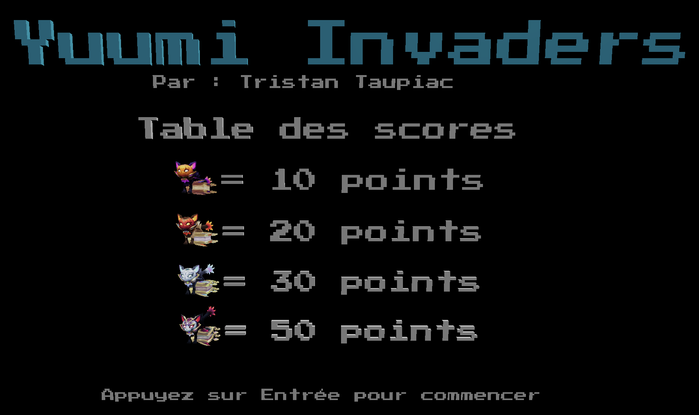
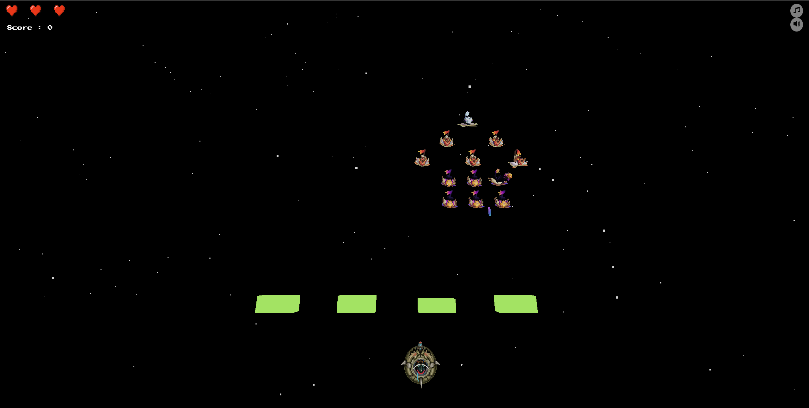
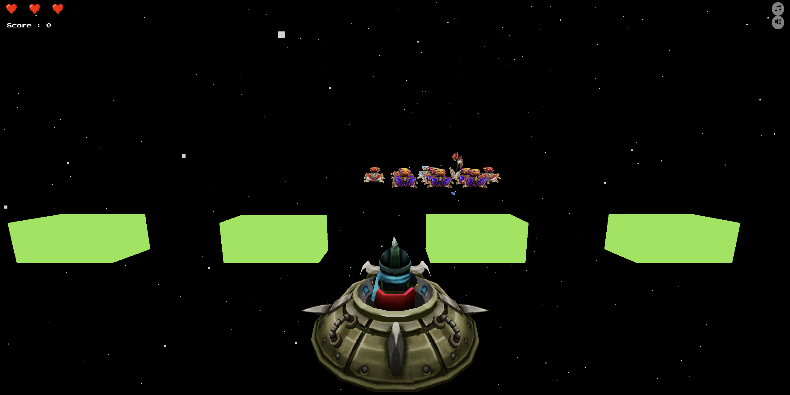
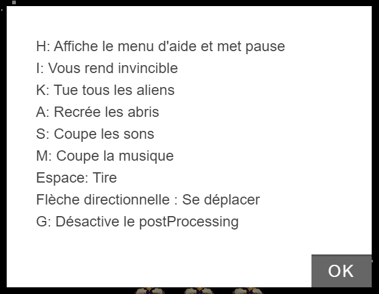
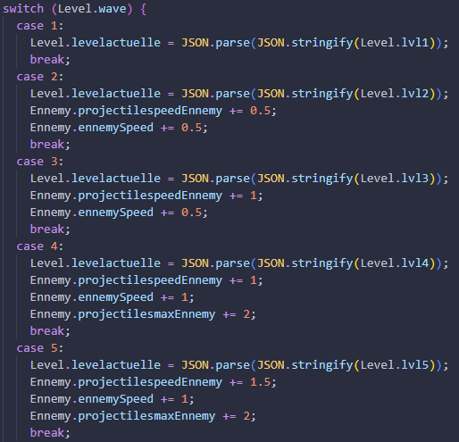
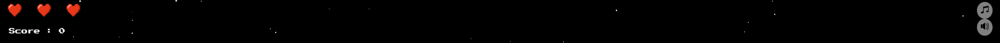

Ce projet consistait à la création d'un jeu dans le style de Space Invaders. Cependant il fallait que ce jeu soit fait en 3D avec l'aide la librairie Threejs.
Le nom du jeu afficher est Yuumi invader étant donné que les modèles des ennemies viennent du personnage ce nommant Yuumi du jeu League of Legend, le modèle du joueur vient du même jeu et ce nomme Corki.
Technologies Utilisées
Dans ce projet, les technologies suivantes ont été utilisé :
Three.js - Pour créer les graphismes 3D du jeu.
Buzz.js - Pour crée et gérer les musiques et les sounds effects.
Gsap - Permet de faire des animations de caméra "lisse" et fluide.
KeyboardJS - Sert à gérer les différentes touches du clavier.
Vexjs - Pour permettre à l'utilisateur d'afficher le menu d'aide.
Architecture Logicielle
J'ai suivi l'arborescence suivante pour la création du jeu :
Le dossier components contient les différents composants de la scène, comme la caméra, la lumière, les différents model, la scène.
Le dossier game contient les différents éléments du jeu, comme les abris, le jeu en lui même, les projectiles, le score.
Le dossier systems contient les différents systèmes du jeu, comme les contrôles, le clavier, la boucle de jeu, le rendu et le sons.
Graphisme
La majorité des graphisme de ce jeu ont été fait à partir de modèle 3D, seul les abris ainsi que les étoiles en fond sont crée à l'aide de la librairie three JS.
Les animations des personnages était déjà faites dans les modèles 3D, j'ai donc juste du les importer et les utiliser dans le jeu.
L'effet post-processing utilisé est le "GlitchPass" qui ce déclenche lorsque le joueur prend des dégats, permettant d'en plus d'un son jouer en fond lui faire comprendre qu'il a perdu un point de vie.
Voici quelque capture d'écrans pour illustrer le jeu :

Menu de démarrage

Image du jeu

Vue "première personne"Effet post-processing
Dialogues avec l'utilisateur et camera
Pour permettre à l'utilisateur de jouer au jeu, j'ai mis en place plusieurs dialogues avec lui, notamment :
Des changements de caméra possible en appuyant sur les touches 0, 1 et 2 de son pavé numérique
Un menu d'aide en appuyant sur la touche H réaliser via Vexjs
Des message de transition au centre de l'écran permettant de savoir lorsqu'il passe un niveau
Voici une capture d'écran du menu d'aide

Gestion des Collisions
Les différentes collisions sont gérer via la fonction distanceTo(), une fonction permettant de connaître la distance entre un point et un autre, ici entre notre projectile et les ennemie ou les abris.
Si la distance est inférieur à un certain seuil, alors on considère que les deux objets sont en collision et disparaissent donc, pour l'abris il va réduire de taille puis disparaitrent.
L'abris a la particularité de réduire de taille en fonction du côté où il est touché, voici une capture d'écran pour illustrer ceci, nous pouvons voir que la 2eme abris a réduit d'un côté tandis que le 3eme a réduit de l'autre côté.
Dynamique
A chaque niveau la difficulté va augmenter que ce soit via une augmentation de la vitesse ou du nombre de projectile ennemie, une amélioration de leur précision en faisant qu'il y a de plus en plus de chance que l'ennemie qui tir soit en face du joueur.
Voici une capture d'écran pour montrer l'évolution de la difficulté :

Intelligence artificiel
Le système "d'intelligence artificiel" a été réalisé de manière assez simple mais efficace, plus le nombre de vague augmente plus le jeu va vérifier que l'ennemie qui tir est proche du joueur sur l'axe X, la fonction permettant de faire ça est trouvable à la ligne 23 du fichier projectile.js.
Ce système est surtout visible à partir du niveau 4 étant donné que plusieurs ennemies vont tirer en même temps.
Audio
Pour la gestion de l'audio la librairie Buzz a été utilisé, permettant de mettre et coupé la musique assez facilement via la touche M pour la musique et S pour les sons ou en cliquant sur l'un des logo à l'écran.
Le son de tir attend que le précédent son de tir soit terminer pour ce lancer, cela permet d'éviter au joueur d'avoir des sons qui ce superpose et qui pourrait être donc trop fort.
Interface Utilisateur
L'interface utilisateur ce veut assez simpliste permettant d'éviter de surcharger le joueur d'informations.
Nous pouvons y trouver le nombre de coeur ainsi que le score en haut à gauche. La partie audio, elle, est trouvable en haut à droite permettant de couper ou non la musique.
Capture d'écran illustrant les informations afficher à l'écran :

Triche
La touche I permet de rendre invincible le joueur, d'immobiliser les ennemies et permet au projectile du joueur de passer à travers les abris.
La touche K permet de tuer tout les ennemies et de passer au niveau suivant.
La touche A permet de recrée les abris.
Petit Plus
Le jeu fonctionne via un système de "tickrate" et permet à l'utilisateur, quelque soit son nombre d'image par seconde, de faire que tout ce déroule tout le temps à la même vitesse. Ce TickRate est utilisé via une clock.
Il suffit de préciser dans le code que X chose doit être update (visible dans le fichier loop.js, la fonction addUpdatable) et comme ça à chaque tick ce qui doit être update le sera. Cette fonction permet donc d'éviter d'avoir plusieurs loop d'animations.
Tout ce qui est en rapport avec les statistique du joueur et des ennemies et des niveaux sont modifiable assez facilement dans config.js.
Une commande secrète a était caché dans le code vous pouvez essayer de la retrouver si vous souhaitez ;)
Voici une vidéo montrant une démonstration du jeu et prouvant que chaque niveau est possible
Références
Sketchfab a été utilisé pour l'utilisation des projectiles lancer par le joueur et par celui des ennemies.
Remerciement Spécial à Riot Games, m'ayant autoriser l'utilisation de leur modèles pour ce jeu.